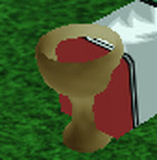

The game currency of Rogue Lineage is called: Silver. Silver can be gained by selling trinkets to merchants, both of which can be found across the map. Trinkets will respawn at random intervals but will always spawn the same placed.
The player will use silver for nearly everything in the game. Silver can buy food, armor, class skills, it can set your spawn point and you can even use it to trade with other players.

Player holding out a goblet